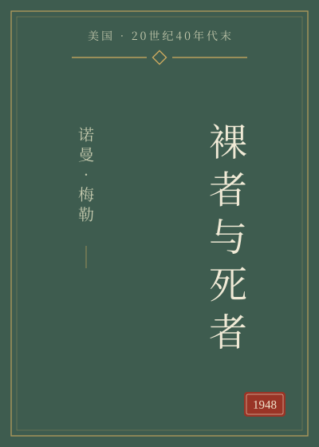
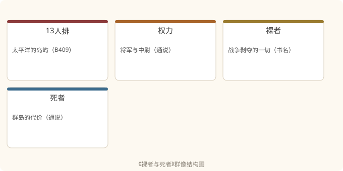

裸者与死者
一、基本信息
| 作者 | 诺曼·梅勒 |
|---|---|
| 成书/出版 | 1948年（Britannica B409：The Naked and the Dead (1948)——'hailed immediately as one of the finest American novels to come out of World War II'） Norman Mailer — Encyclopaedia Britannica（百科全书） |
| 国别/地区 | 美国 |
| 时代 | 现当代 · 20世纪40年代末 |
| 体裁 | 长篇小说 |
| 语言 | 英语 |

《裸者与死者》群像结构图（主题·结构图）
二、创作背景
Britannica（B409）：'hailed immediately as one of the finest American novels to come out of World War II'（立即被誉为二战最佳美国小说之一）——索邦求学期间写。
Britannica（B409）：'follows a platoon of 13 American soldiers stationed on the Japanese-held island of Anopopei in the Pacific'（太平洋日占虚构岛 Anopopei 上的13人排）。
Britannica（B409）：梅勒——哈佛1943航空工程、1944-46太平洋服役。
三、内容脉络
（通说待核——B409未载剧情）安诺波佩岛登陆战：卡明斯将军与赫恩中尉的权力角斗。
（通说待核）'箱子'式的排级群像与飞行员的'时间机器'插入。
四、主要人物表
| 人物 | 身份 | 说明 |
|---|---|---|
| 卡明斯将军 | 师指挥官 | （通说待核，B409未载） |
| 赫恩 | 中尉 | （通说待核） |
五、主题与艺术特点
- '二战最佳美国小说之一'（B409）。
- 军阶与权力的政治（通说待核）。
- 13人排的群像（B409：a platoon of 13 American soldiers）。
六、影响与评论
- Britannica：'hailed immediately as one of the finest American novels to come out of World War II'（B409）。
Norman Mailer — Encyclopaedia Britannica（百科全书） - Britannica：梅勒'新新闻主义'（B409 交叉）。
Norman Mailer — Encyclopaedia Britannica（百科全书）
七、阅读建议
难点
- 群像的插章结构（'时间机器'——通说待核）。
- 太平洋战场史。
- 《裸者与死者》中译本（人民文学等——通说待核）。
- 英文原版。
梅勒首作；与《刽子手之歌》对读。
八、待核实
- 卡明斯/赫恩人名核对（通说）。
- 1948年出版（Holt说）待核。
- '时间机器'插章细节待核。